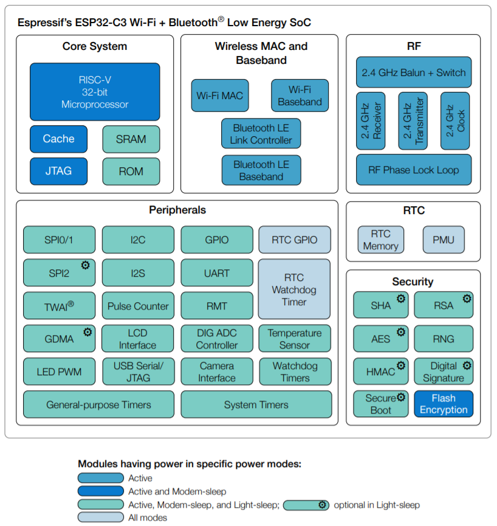
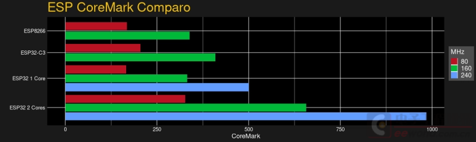
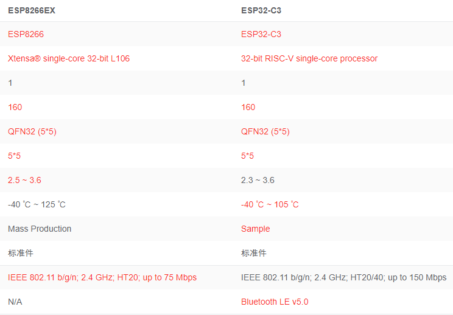
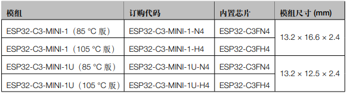
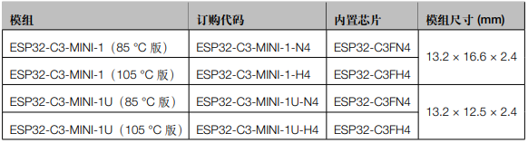

ESP32C3¶
GitHub : RISC-V 160MHz BLE5.0 Wi-Fi QFN32
Xin简介¶
规格参数¶
基本参数¶
特征参数¶
模拟性能¶
5ch 12-bit ADC1, 100 ksps
1ch 12-bit ADC2
芯片架构¶
功耗参数¶
电压范围：2.3 to 3.6 V
功耗范围：
连接能力¶
Wi-Fi¶
802.11b/g/n 21dBm 150Mbps HT40
BLE5.0¶
BLE 5.0 -94dBm Mesh 18dBm
TWAI¶
ISO11898-1
Hint
支持蓝牙5.0、支持蓝牙与WiFi共存机制，软件支持TCP/IP、MQTT、HTTP、COAP等常见协议，支持AT指令，支持OTA升级，支持WiFi+BLE MESH组网
计算性能¶

安全特性¶
支持硬件加密，包括安全启动和Flash加密（填补ESP8266EX安全性问题）
RSA 模块¶
基于 RSA-3072 的标准身份验证方案，确保在设备上运行受信任的应用程序。该功能可阻止设备运行烧录在 flash 中的恶意程序。 安全启动需要快速高效地进行，以满足即时启动设备（如球泡灯）的需求，ESP32-C3 的安全启动方案仅在设备启动过程中增加了不到 100 ms 的时间开销。
AES 模块¶
XTS-AES-128
基于 AES-128-XTS 算法的 flash 加密方案，确保应用程序与配置数据在 flash 中保持加密状态。 flash 控制器支持执行加密的应用程序固件，这不仅为存储在 flash 中的敏感数据提供了必要保护，还防止了运行时由于固件更改造成的 TOCTTOU (time-of-check-to-time-of-use) 攻击。
数字签名¶
ESP32-C3 的数字签名外设，可以通过固件不可访问的私钥生成数字签名。同样地，其 HMAC 外设也可以生成固件不可访问的加密摘要。 目前，大多数物联网云服务使用基于 X.509 证书的身份验证，数字签名外设保护了定义设备身份的私钥。这样一来，即使出现软件漏洞，它也能为设备身份提供强大的保护
Xin选择¶
品牌对比¶
SRAM/ROM |
UART/SPI/SDIO |
|||||
|---|---|---|---|---|---|---|
407.22 |
400K/384K |
WiFi+BLE |
2/3/0 |
|||
352K/288K |
WiFi |
3/2/1 |
QFN32 |
|||
288K/2M |
WiFi+BLE |
6/2/1 |
QFN32 |
Hi3861 和 ESP32C3 封装规格相同QFN32但不兼容，在该领域 ESP32C3 凭借开源生态优势和IDF框架，和海思生态及HarmonyOS各有千秋。
在一定程度上W806对标对手应该是ESP32-S系列，产品定位差异交叠处较多。ESP32-C3 和 W806 相比封装更小，扩展能力和计算能力规格更低，支持BLE 5.0, 更偏向无线数据节点，后者配置更多的IO，更多的UART,以及16bit SD ADC和SDIO接口，更偏向有针对性的，更复杂的终端网关设备
功能对比¶
BLE
BLE |
SRAM/ROM |
Characteristics |
UART/SPI/SDIO |
|||
|---|---|---|---|---|---|---|
5.0 |
512KB/384KB |
QFN32 |
||||
5.0 |
512KB/384KB |
QFN28 |
||||
4.2 |
18 KB/512KB |
QFN28 |
性能对比¶
ESP32C3 的官方性能 407.22 CoreMark @160MHz，略高于120 MHz Cortex-M3 的STM32F2系列(398 CoreMark)如 STM32F207，略低于 120 MHz Cortex-M4 的STM32L4+系列(409 CoreMark)
型号对比¶
SRAM/ROM |
WiFi |
BLE |
USB |
||||
|---|---|---|---|---|---|---|---|
407.22 |
400KB/384KB |
√ |
v5.0 |
X |
QFN32 |
||
994.26 |
520KB/448KB |
b/g/n |
BLE v4.2 |
X |
QFN48 |
||
1181.6 |
512KB/384KB |
b/g/n |
BLE v5.0 |
USB1.1 |
QFN56 |
对比ESP8266¶
与2014年发布的ESP8266相比，ESP32-C3更像是ESP32的简化版，QFN32(5*5)封装与ESP8266EX一致，价格也对标
支持2.4GHz HT20/40、带宽150Mbps（同比ESP8266EX高了一倍带宽）
ESP8266EX 不足：
eFUSE不开放
RF信号质量不够高
DTIM保活功耗较高
内存较小，无法支撑复杂的应用场合
缺少硬件加密、没有安全启动和Flash加密，RSA耗时较长，TLS握手需要3-4秒
对比ESP32¶
ESP32-C3没有对 IRAM 和 DRAM 进行静态划分。SRAM 的前 16 KB 被配置为 cache 专用。与 ESP32 不同的是，ESP32-C3 的 IRAM 和 DRAM 地址在相同方向递增。 基于应用需求，链接器脚本可将所需的空间配置为 IRAM，其后便为 DRAM 空间。因此相比 ESP32 来说，ESP32-C3 的存储空间使用效率更高。


Note
ESP32-C3的蓝牙子系统不要求其存储必须为某固定位置的连续空间。反之，它使用标准的系统堆来分配存储空间，因此应用可以在需要的时候打开或禁用蓝牙。要实现这一点，仅需确保堆中有足够的存储空间即可。
版本对比¶

ESP8625¶
相对ESP32-C3FH4版本，主要差异在于封装更小QFN28(4*4)，但是没有BT SIG认证，集成的Flash只有2M
Xin应用¶
开发板¶

核心板¶
ESP32-C3-MINI-1¶
 

开发框架¶
ESP-IDF¶
支持ESP32C3需要release/v4.3及以上版本 ESP-IDF ，围绕 ESP32-C3构建固件，需要安装一些必备工具包括 Python、Git、交叉编译器、CMake 和 Ninja等。
Arduino¶
应用笔记¶
LEDC¶
WiFi Mesh¶
LittlevGL¶
ESP32-C3支持 LittlevGL ，适配QSPI和8080接口的屏(QSPI适合4.3寸以下)。
开源方案¶
如果你要探索一些开源项目，可能时常遇到基于 PlatformIO 构建的工程，通过跨平台编译，直接在编辑器中集成，可以云端部署，比常用的IDE拥有更多的灵活性。
Xin总结¶
能力构建¶
Note
相对传统的MCU使用的强大IDE环境，最大的槽点就是缺乏高度集成的工具环境，ESP-IDF的编译效率较低，文件修改后编译非常耗时